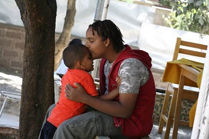
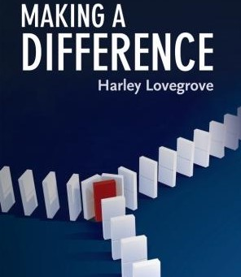
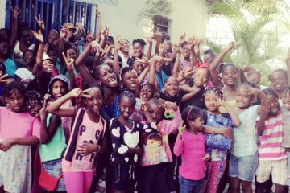

Visit to NIA
January 21 2019, was the day we visited the NIA Foundation's: Joy center for children with autism.
My friends and I had initially planned to volunteer this coming summer at the foundation as we wanted to widen our awareness about
austism and as we wanted to ...
Visit the Site

Making a Difference
One of the greatest problems that our planet currently faces is the problem of global warming.
We hear about it almost every day on the media. One of the main contributors to this problem is the existence of toxic waste.
This waste is mostly described as poisonous byproducts of industries, farms, garages, laboratories, hospitals and the like but it also needs to emphasize ...
Read More

Summer at YWCA
After signing up to do volunteer work at a nearby NGO named the Young Women Christian Association, I realized that each and every one of us were living in our own world not caring about what happens to the people in our community . I was assigned to ...
Visit the Site